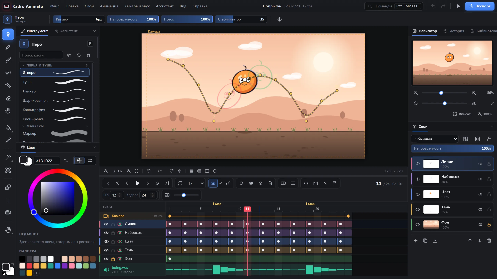

Кисти по видам
Перья и тушь, карандаши, кисти, аэрограф и эффекты — у каждого свой инструмент с пресетами. Нажим, зерно бумаги, сужение штриха и стабилизатор.
Kadro Animate — бесплатный редактор рисованной анимации: кисти с нажимом пера, слои с ключами, калька, камера и звук, а ещё умный ассистент аниматора. Работает в браузере без установки и как программа для Windows.

Привычные приёмы Animate и Clip Studio — и инструменты, которых там нет.
Перья и тушь, карандаши, кисти, аэрограф и эффекты — у каждого свой инструмент с пресетами. Нажим, зерно бумаги, сужение штриха и стабилизатор.
Слои с ключами, как в Animate: F5, F6, F7, блоки ячеек, перенос и копирование кадров, калька на соседние рисунки и бесшовная калька для циклов.
Призрак инбетвина сводит соседние рисунки в середину по положению и размеру, а шкала фаз расставляет промежутки с разгоном и торможением.
Зажмите клавишу ` и водите пером — кадры листаются, как бумага в руке. Отпустите — вернётесь к своему кадру.
Дуга движения через центры рисунков, проверка силуэта, смаз-кадры и поиск мест, где анимация «дёргается».
Плоская заливка всех областей, перенос цветов на следующие кадры, автотени и перекраска во всей анимации.
Ключи камеры с плавными переходами, тряска, звуковая дорожка, автолипсинк и метки, отбитые в ритм прямо во время воспроизведения.
GIF, MP4 и WebM, PNG-секвенция и спрайт-лист для игр — через камеру или без, с прозрачным фоном.
Кольцо планшета поворачивает холст, зажатое колесо листает историю, а любую кнопку можно назначить в «Проверке планшета».
Больше двадцати помощников, которые берут на себя рутину: промежутки, покраску, циклы, липсинк, тряску камеры, очистку мусора и обводку силуэта. Каждый отменяется одним шагом Ctrl+Z.
Встроенная самопроверка прогоняет больше восьмисот автотестов прямо в программе, так что редактор проверен на каждом выпуске.
Смонтируйте готовую анимацию со звуком, титрами и эффектами — тоже бесплатно и без водяных знаков.
Возможности одинаковые. В программе для Windows — системные окна открытия и сохранения, меню, горячие клавиши без ограничений браузера и открытие проектов .inkf двойным щелчком.
На вашем компьютере: проекты сохраняются в файлы .inkf. Браузер ещё делает автосохранение на случай сбоя. Ничего не отправляется в сеть.
Любой, который работает с пером в Windows или браузере: Wacom, Huion, XP-Pen и другие. Нажим работает сразу, а кнопки и кольцо можно назначить в Справка → «Проверка планшета и клавиш».
Так SmartScreen реагирует на новые программы без платной цифровой подписи. Нажмите «Подробнее» → «Выполнить в любом случае».
На украинском, русском и английском. Браузерная версия открывается на языке сайта, программа для Windows — на языке системы, а сменить его можно в меню Вид → Язык или в Файл → Настройки.
Да, как и Kadro: без подписок, пробных периодов, водяных знаков и учётной записи. Всё, что вы нарисовали, принадлежит вам.